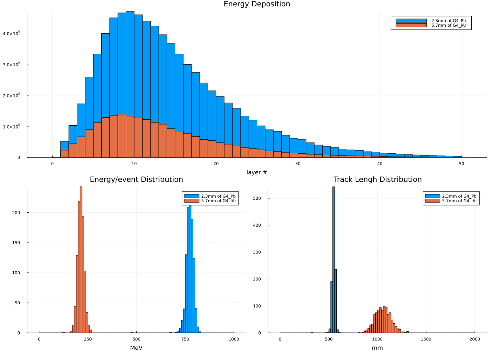
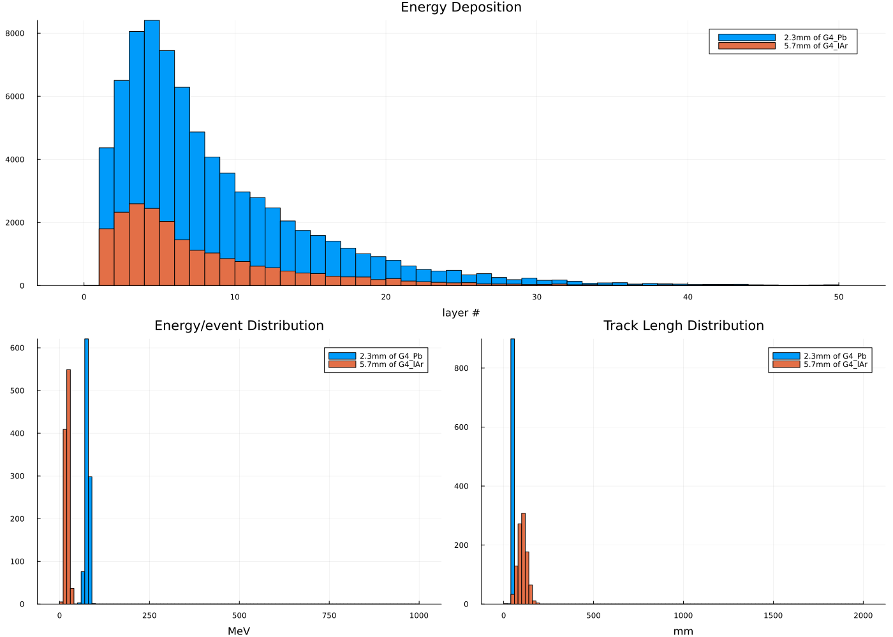
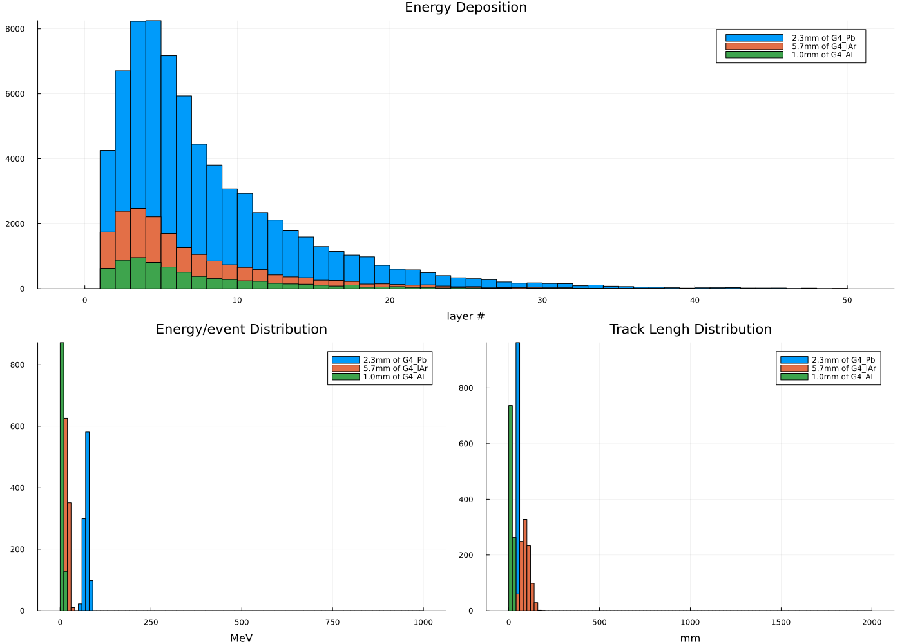

Extended/TestEm3 Example
This example is based on the Geant4 extended/TestEm3 example of the Geant4 distribution. It can be used to test the electromagnetic physics processes in Geant4.
- How to collect energy deposition in a sampling calorimeter.
- How to survey energy flow.
- How to print stopping power.
Geometry
The calorimeter is a box made of a given number of layers. A layer consists of a sequence of various absorbers (maximum MaxAbsor=9). The layer is replicated.
Parameters defining the calorimeter :
- the number of layers,
- the number of absorbers within a layer,
- the material of the absorbers,
- the thickness of the absorbers,
- the transverse size of the calorimeter (the input face is a square).
In addition a transverse uniform magnetic field can be applied.
The default geometry is constructed in DetectorConstruction class, but all of the above parameters can be modified interactively via the commands defined in the DetectorMessenger class.
|<----layer 0---------->|<----layer 1---------->|<----layer 2---------->|
| | | | |
==========================================================================
|| | || | || | ||
|| | || | || | ||
|| abs 1 | abs 2 || abs 1 | abs 2 || abs 1 | abs 2 ||
|| | || | || | ||
|| | || | || | ||
beam || | || | || | ||
====> || | || | || | ||
|| | || | || | ||
|| | || | || | ||
|| | || | || | ||
|| | || | || | ||
|| cell 1 | cell 2 || cell 3 | cell 4 || cell 5 | cell 6 ||
==========================================================================
^ ^ ^ ^ ^ ^ ^
pln1 pln2 pln3 pln4 pln5 pln6 pln7You can also download this example as a Jupyter notebook and a plain Julia source file.
Table of contents
- Geometry
- Loading the necessary Julia modules
- Define Detector structure
- Define Simulation Data struct
- Particle Gun initialization
- Define the Simulation User Actions
- Create the Application
- Configure, Initialize and Run
- Plot the results
Loading the necessary Julia modules
Load the Geant4 and Geant4.SystemOfUnits modules. We will also use the FHist and Plots modules to handle the histograms and plots, and Printf to format the output.
using Geant4
using Geant4.SystemOfUnits
using FHist, Plots, Printf
import DisplayAs: PNGDefine Detector structure
The detector is a sandwich calorimeter made of layers of sensitive and absorber materials. The detector is defined by the TestEm3Detector structure. We include the TestEm3Detector.jl file not to clutter the example. We can also use a GDML file to define the geometry. This is done by instantiating the G4JLDetectorGDML type with the GDML file as argument.
const useGdml = true
include(joinpath(@__DIR__, "TestEm3Detector.jl"))
if useGdml
detector = G4JLDetectorGDML("$(@__DIR__)/TestEm3.gdml")
else
detector = TestEm3Detector()
endGeant4.G4JLDetectorGDML(CxxWrap.CxxWrapCore.CxxPtr{Geant4.G4VPhysicalVolume}(Ptr{Geant4.G4VPhysicalVolume} @0x0000000000bd8ab0))Define Simulation Data struct
It consists on a number of counters and statistical accumulators to store the simulation results. In addition, it includes a number of histograms to store the results.
const Hist1D64 = Hist1D{Float64}
mutable struct TestEm3SimData <: G4JLSimulationData
##---Run data-----------------------------------------------------------------------------------
fParticle::CxxPtr{G4ParticleDefinition}
fEkin::Float64
##fSumEAbs::Vector{Float64}
##fSum2EAbs::Vector{Float64}
##fSumLAbs::Vector{Float64}
##fSum2LAbs::Vector{Float64}
##fEdepTot::Float64
##fEdepTot2::Float64
##fEleakTot::Float64
##fEleakTot2::Float64
##fEtotal::Float64
##fEtotal2::Float64
##fEnergyFlow::Vector{Float64}
##fLateralEleak::Vector{Float64}
##fEnergyDeposit::Matrix{Float64}
fChargedStep::Int32
fNeutralStep::Int32
fN_gamma::Int32
fN_elec::Int32
fN_pos::Int32
fEnergyDeposit::Vector{Float64} ## Energy deposit per event
fTrackLengthCh::Vector{Float64} ## Track length per event
fEdepEventHistos::Vector{Hist1D64}
fTrackLengthChHistos::Vector{Hist1D64}
fEdepHistos::Vector{Hist1D64}
fAbsorLabel::Vector{String}
##G4double fEdeptrue [kMaxAbsor];
##G4double fRmstrue [kMaxAbsor];
##G4double fLimittrue[kMaxAbsor];
##G4bool fApplyLimit;
##fTimer::Float64
TestEm3SimData() = new()
endWe also define the add! function to reduce the simulation results between the master and worker threads.
function add!(x::TestEm3SimData, y::TestEm3SimData)
x.fChargedStep += y.fChargedStep
x.fNeutralStep += y.fNeutralStep
x.fN_gamma += y.fN_gamma
x.fN_elec += y.fN_elec
x.fN_pos += y.fN_pos
x.fEdepEventHistos += y.fEdepEventHistos
x.fTrackLengthChHistos += y.fTrackLengthChHistos
x.fEdepHistos += y.fEdepHistos
endadd! (generic function with 1 method)Define a function to plot the simulation data from the application
function do_plot(data::TestEm3SimData)
(;fEdepHistos, fEdepEventHistos, fTrackLengthChHistos, fAbsorLabel) = data
lay = @layout [°; ° °]
img = plot(layout=lay, show=true, size=(1400,1000))
for (h, l) in zip(fEdepHistos, fAbsorLabel)
plot!(subplot=1, h, title="Energy Deposition", xlabel="layer #", label=l, show=true)
end
for (h, l) in zip(fEdepEventHistos, fAbsorLabel)
plot!(subplot=2, h, title="Energy/event Distribution", label=l, xlabel="MeV")
end
for (h, l) in zip(fTrackLengthChHistos, fAbsorLabel)
plot!(subplot=3, h, title="Track Lengh Distribution", label=l, xlabel="mm")
end
return img
enddo_plot (generic function with 1 method)Particle Gun initialization
particlegun = G4JLGunGenerator(particle = "e-",
energy = 1GeV,
direction = G4ThreeVector(1,0,0),
position = G4ThreeVector(0,0,0)) # temporary potition, will update once the detector is constructedGeant4.G4JLGunGenerator("ParticleGun", Geant4.G4JLParticleGunData(nothing, "e-", G4ThreeVector(1.0,0.0,0.0), G4ThreeVector(0.0,0.0,0.0), 1000.0), Geant4.var"#init#19"(), Geant4.var"#gen#20"(), Geant4.G4JLGeneratorAction[])Define the Simulation User Actions
##---Step action------------------------------------------------------------------------------------
function stepaction(step::G4Step, app::G4JLApplication)::Nothing
detector = app.detector
data = getSIMdata(app)
prepoint = GetPreStepPoint(step)
track = GetTrack(step)
# Return if step in not in the world volume
prepoint |> GetPhysicalVolume |> GetLogicalVolume |> GetMaterial == detector.fWorldMaterial && return nothing
particle = GetDefinition(track)
charge = GetPDGCharge(particle)
stepl = 0.
if charge != 0.
stepl = GetStepLength(step)
data.fChargedStep += 1
else
data.fNeutralStep += 1
end
edep = GetTotalEnergyDeposit(step) * GetWeight(track)
absorNum = GetCopyNumber(GetTouchable(prepoint), 0)
layerNum = GetCopyNumber(GetTouchable(prepoint), 1) + 1 ## replicas copynumber starts at 0
data.fEnergyDeposit[absorNum] += edep
data.fTrackLengthCh[absorNum] += stepl
push!(data.fEdepHistos[absorNum], layerNum, edep)
nothing
end
##---Tracking pre-action----------------------------------------------------------------------------
let G4Gamma, G4Electron, G4Positron, first=true
global function pretrackaction(track::G4Track, app::G4JLApplication)::Nothing
if first
G4Gamma = FindParticle("gamma")
G4Electron = FindParticle("e-")
G4Positron = FindParticle("e+")
first = false
end
data = getSIMdata(app)
d = GetDefinition(track)
if d === G4Gamma
data.fN_gamma += 1
elseif d === G4Electron
data.fN_elec +=1
elseif d === G4Positron
data.fN_pos += 1
end
nothing
end
end
##---Tracking post-action---------------------------------------------------------------------------
function posttrackaction(track::G4Track, ::G4JLApplication)::Nothing
nothing
end
##---Begin Run Action-------------------------------------------------------------------------------
function beginrun(run::G4Run, app::G4JLApplication)::Nothing
data = getSIMdata(app)
(; fNbOfAbsor, fNbOfLayers, fAbsorMaterial, fAbsorThickness) = app.detector
gun = app.generator.data.gun
data.fParticle = GetParticleDefinition(gun)
data.fEkin = GetParticleEnergy(gun)
data.fN_gamma = data.fN_elec = data.fN_pos = 0
data.fChargedStep = data.fNeutralStep = 0
# init arrays
data.fEnergyDeposit = zeros(fNbOfAbsor)
data.fTrackLengthCh = zeros(fNbOfAbsor)
data.fEdepHistos = [Hist1D(;counttype=Float64,binedges=0.:1.0:fNbOfLayers) for i in 1:fNbOfAbsor]
data.fEdepEventHistos = [Hist1D(;binedges=0.:10.:1000.) for i in 1:fNbOfAbsor]
data.fTrackLengthChHistos = [Hist1D(;binedges=0.:20.:2000.) for i in 1:fNbOfAbsor]
data.fAbsorLabel = ["$(fAbsorThickness[i])mm of $(fAbsorMaterial[i] |> GetName |> String)" for i in 1:fNbOfAbsor]
nothing
end
##---End Run Action---------------------------------------------------------------------------------
function endrun(run::G4Run, app::G4JLApplication)::Nothing
##---end run action is called for each workwer thread and the master one
if G4Threading!G4GetThreadId() < 0
data = app.simdata[1]
##---This is the master thread, so we need to add all the simuation results-----------------
for d in app.simdata[2:end]
add!(data, d)
end
nEvt = GetNumberOfEvent(run)
norm = nEvt > 0 ? 1/nEvt : 1.
@printf "------------------------------------------------------------\n"
@printf " Beam particle %s E = %.2f GeV\n" String(GetParticleName(data.fParticle)) data.fEkin/GeV
@printf " Mean number of gamma %.2f\n" data.fN_gamma*norm
@printf " Mean number of e- %.2f\n" data.fN_elec*norm
@printf " Mean number of e+ %.2f\n" data.fN_pos*norm
@printf " Mean number of charged steps %f\n" data.fChargedStep*norm
@printf " Mean number of neutral steps %f\n" data.fNeutralStep*norm
@printf "------------------------------------------------------------"
else
G4JL_println("end-run for worker $(G4Threading!G4GetThreadId())")
end
end
##---Begin Event Action-----------------------------------------------------------------------------
function beginevent(evt::G4Event, app::G4JLApplication)
data = getSIMdata(app)
fill!(data.fEnergyDeposit, 0.0)
fill!(data.fTrackLengthCh, 0.0)
nothing
end
##---End Event Action-------------------------------------------------------------------------------
function endevent(evt::G4Event, app::G4JLApplication)
data = getSIMdata(app)
(; fNbOfAbsor, fNbOfLayers) = app.detector
for i in 1:fNbOfAbsor
push!(data.fEdepEventHistos[i], data.fEnergyDeposit[i])
push!(data.fTrackLengthChHistos[i], data.fTrackLengthCh[i])
end
nothing
endendevent (generic function with 1 method)Create the Application
app = G4JLApplication(detector = TestEm3Detector(), ## detector with parameters
simdata = TestEm3SimData(), ## simulation data structure
generator = particlegun, ## primary particle generator
nthreads = VERSION > v"1.9" ? 4 : 0, ## number of threads (MT)
physics_type = FTFP_BERT, ## what physics list to instantiate
##----Actions--------------------------------
stepaction_method = stepaction, ## step action method
pretrackaction_method = pretrackaction, ## pre-tracking action
posttrackaction_method = posttrackaction, ## post-tracking action
beginrunaction_method = beginrun, ## begin-run action (initialize counters and histograms)
endrunaction_method = endrun, ## end-run action (print summary)
begineventaction_method = beginevent, ## begin-event action (initialize per-event data)
endeventaction_method = endevent ## end-event action (fill histogram per event data)
)Geant4.G4JLApplication{Main.var"##230".TestEm3Detector, Main.var"##230".TestEm3SimData}(Geant4.G4MTRunManagerAllocated(Ptr{Nothing} @0x0000000002af11e0), Main.var"##230".TestEm3Detector(2, 50, 400.0, [2.3, 5.7], 8.0, 400.0, 480.0, 480.0, CxxWrap.CxxWrapCore.CxxPtr{Geant4.G4Material}[CxxWrap.CxxWrapCore.CxxPtr{Geant4.G4Material}(Ptr{Geant4.G4Material} @0x000000000131b290), CxxWrap.CxxWrapCore.CxxPtr{Geant4.G4Material}(Ptr{Geant4.G4Material} @0x0000000001a147d0)], CxxWrap.CxxWrapCore.CxxPtr{Geant4.G4Material}(Ptr{Geant4.G4Material} @0x0000000001808b00), #undef, #undef, CxxWrap.CxxWrapCore.CxxPtr{Geant4.G4VPhysicalVolume}(Ptr{Geant4.G4VPhysicalVolume} @0x0000000000000000), #undef, #undef, CxxWrap.CxxWrapCore.CxxPtr{Geant4.G4VPhysicalVolume}(Ptr{Geant4.G4VPhysicalVolume} @0x0000000000000000), #undef, #undef, CxxWrap.CxxWrapCore.CxxPtr{Geant4.G4VPhysicalVolume}(Ptr{Geant4.G4VPhysicalVolume} @0x0000000000000000), #undef, #undef, #undef), Main.var"##230".TestEm3SimData[Main.var"##230".TestEm3SimData(CxxWrap.CxxWrapCore.CxxPtr{Geant4.G4ParticleDefinition}(Ptr{Geant4.G4ParticleDefinition} @0x0000000000000000), 0.0, 0, 0, 0, 0, 0, #undef, #undef, #undef, #undef, #undef, #undef), Main.var"##230".TestEm3SimData(CxxWrap.CxxWrapCore.CxxPtr{Geant4.G4ParticleDefinition}(Ptr{Geant4.G4ParticleDefinition} @0x0000000000000000), 0.0, 0, 0, 0, 0, 0, #undef, #undef, #undef, #undef, #undef, #undef), Main.var"##230".TestEm3SimData(CxxWrap.CxxWrapCore.CxxPtr{Geant4.G4ParticleDefinition}(Ptr{Geant4.G4ParticleDefinition} @0x0000000000000000), 0.0, 0, 0, 0, 0, 0, #undef, #undef, #undef, #undef, #undef, #undef), Main.var"##230".TestEm3SimData(CxxWrap.CxxWrapCore.CxxPtr{Geant4.G4ParticleDefinition}(Ptr{Geant4.G4ParticleDefinition} @0x0000000000000000), 0.0, 0, 0, 0, 0, 0, #undef, #undef, #undef, #undef, #undef, #undef), Main.var"##230".TestEm3SimData(CxxWrap.CxxWrapCore.CxxPtr{Geant4.G4ParticleDefinition}(Ptr{Geant4.G4ParticleDefinition} @0x0000000000000000), 0.0, 0, 0, 0, 0, 0, #undef, #undef, #undef, #undef, #undef, #undef)], Geant4.G4JLGunGenerator("ParticleGun", Geant4.G4JLParticleGunData(nothing, "e-", G4ThreeVector(1.0,0.0,0.0), G4ThreeVector(0.0,0.0,0.0), 1000.0), Geant4.var"#init#19"(), Geant4.var"#gen#20"(), Geant4.G4JLGeneratorAction[]), nothing, nothing, 4, 0, Geant4.G4MTRunManager, Geant4.G4JLDetectorConstruction, Geant4.FTFP_BERT, Geant4.G4JLRunAction, Geant4.G4JLEventAction, Geant4.G4JLTrackingAction, Geant4.G4JLSteppingAction, Main.var"##230".stepaction, Main.var"##230".pretrackaction, Main.var"##230".posttrackaction, Main.var"##230".beginrun, Main.var"##230".endrun, Main.var"##230".beginevent, Main.var"##230".endevent, nothing, nothing, Dict{String, Geant4.G4JLProtoSD}(), Dict{String, Vector{Geant4.G4JLSensitiveDetector}}(), Geant4.G4JLScoringMesh[], nothing, nothing)Configure, Initialize and Run
configure(app)
initialize(app)
SetParticlePosition(particlegun, G4ThreeVector(-app.detector.fWorldSizeX/2,0,0)) ## Only now is known the size of the 'world'
beamOn(app, 1000)Building Geometry now!!!
### G4LevelReader: broken transition 0 from level 24 to 24 for isotope Z= 89 A= 219 - use ground level
G4WT1 > end-run for worker 1
G4WT3 > end-run for worker 3
G4WT2 > end-run for worker 2
G4WT0 > end-run for worker 0
------------------------------------------------------------
Beam particle e- E = 1.00 GeV
Mean number of gamma 521.20
Mean number of e- 896.44
Mean number of e+ 53.27
Mean number of charged steps 3741.658000
Mean number of neutral steps 3716.913000
------------------------------------------------------------Plot the results
img = do_plot(app.simdata[1])
PNG(img)
Change the primary particle enerqy and run the simulation again
SetParticleEnergy(particlegun, 100MeV)
beamOn(app, 1000)
img = do_plot(app.simdata[1])
PNG(img)
Change the geometry and run the simulation again
Add a new absorber layer
reinitialize(app, TestEm3Detector(absorThickness = [2.3mm, 5.7mm, 1mm],
absorMaterial = ["G4_Pb", "G4_lAr", "G4_Al"]))
beamOn(app, 1000)
img = do_plot(app.simdata[1])
PNG(img)
This page was generated using Literate.jl.